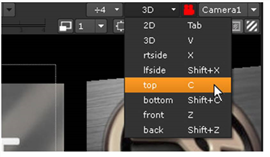
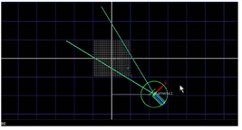
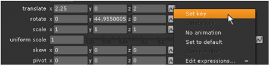
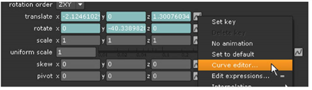
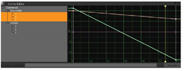
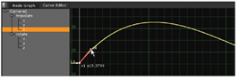
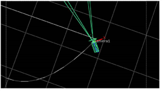
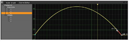
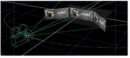

你创造的小场景会更有趣，相机移动。您可以对相机和对象进行动画处理; 在每个控制面板中，您将看到随着时间的推移可以设置动画的每个参数旁边都有一个动画按钮。
| 1。 | 在查看器中，将时间滑块拖动到帧 1 在时间线上。 |
| 2. | 让我们切换到头顶视图来移动相机。选择 顶部 从视图下拉菜单。 |

| 3. | 双击上的 Camera1 对象 (在查看器内部或节点图上) 打开其控制面板。 |
| 4. | 将相机向右移动，并将其旋转以 “查看” 3D 工作区的中心。 |

| 5. | 点击相机旁边的动画按钮 翻译 参数，然后选择 设置密钥 . |

参数框的背景会更改颜色，以显示现在在时间轴的当前帧中为这些值设置了关键帧。现在，您需要为旋转值设置关键帧。
| 6. | 接下来，单击相机旁边的动画按钮 旋转 参数，然后选择 设置密钥 . |
| 7. | 在观察者中，擦洗到时间线的末尾。然后，将相机移动到左侧，并将其旋转到面中心。这将自动为 翻译 和 旋转 参数，用于最后一帧。 |
| 8。 | 通过时间轴拖动，相机在关键帧记录的位置之间移动。 |
打哈欠。只有两个关键帧，相机会直线移动，从开始到结束。让我们编辑动画曲线，使其更有趣。
| 9. | 单击相机平移参数旁边的动画按钮，然后选择 曲线编辑器 . |

这将在与节点图相同的窗格中打开 “曲线编辑器” 窗口。曲线编辑器左侧的轮廓显示已设置动画的参数列表，曲线显示随时间绘制的值。每个点显示为关键帧上的值记录的值。

是的，我们知道。它们看起来还不像曲线。你只设置了两个关键帧，记得吗？你可以按 Ctrl Alt (Mac 用户按 Cmd Alt ) 并单击任意行添加更多关键帧。然而，让我们假设你想在相机的第一个和最后一个记录的位置之间创建一个平滑的弧。让我们改变曲线的形状，而不是设置更多的关键帧。
| 10. | 您希望控制沿 z 方向的相机路径的形状-原点和相机之间的距离，因此单击 翻译/z 曲线编辑器中的参数。 |
单击平移/z 曲线的第一个点以选择它，然后向上拖动切线控制柄，如下所示。

从这一点开始，曲线会增加相机在 z轴上的距离，现在您可以在查看器中看到。

| 11。 | 单击平移/z 曲线的最后一点以选择它，并向上拖动它以完成所需的形状。这简化了在时间线结束时回到关键帧值的距离。 |

在查看器中选择相机，您应该会看到曲线的逐渐倾斜为相机移动创建一个更有趣的弧。
切换到 3D (V) 透视视图并在时间线中滚动以查看新的相机移动。

你的版本可能看起来有点不同，这取决于你定义的位置和旋转，但是你明白了。
| 12. | 如果需要，可以设置其他关键帧来细化相机路径。按住 Ctrl + Alt 或 命令 + 选项 在曲线编辑器中单击 z 轴曲线，向曲线添加新点，然后调整它们的位置。 |
| 13。 | 在继续之前，请单击 节点图 选项卡隐藏曲线编辑器并返回到节点树。 |
| 14. | 关闭当前打开的所有控制面板。 |
|
|